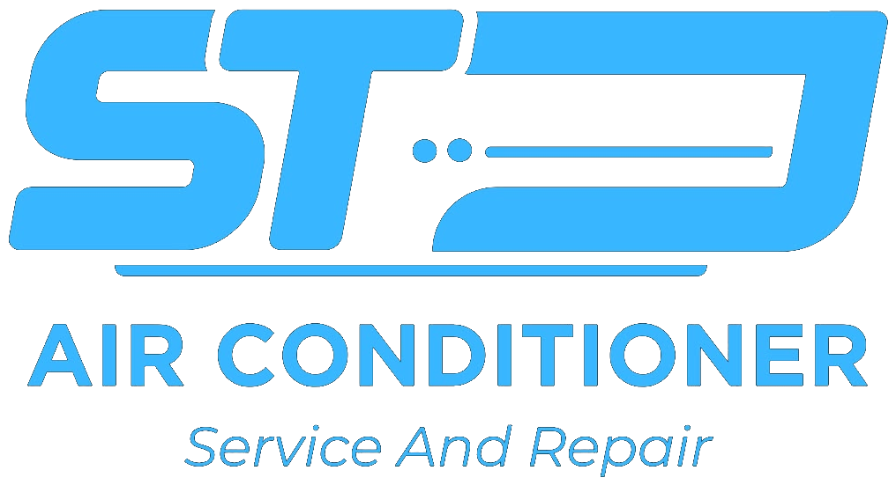
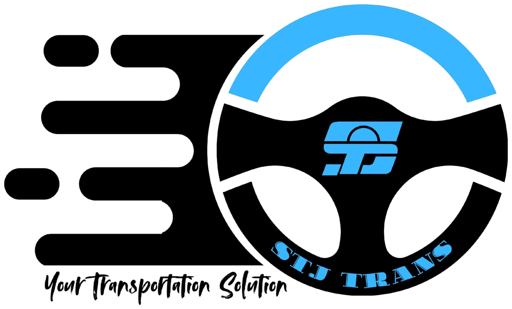
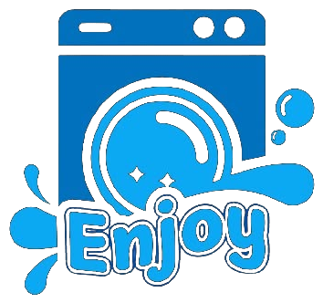
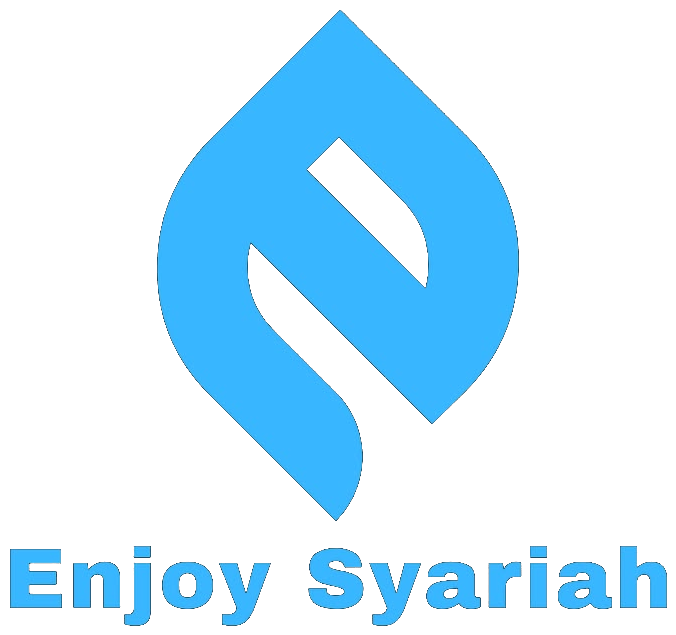
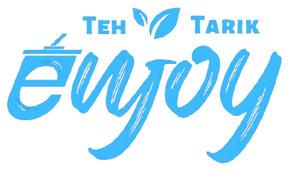

PT Sekawan Tunggal Jaya hadir sebagai mitra investasi jangka panjang dengan unit usaha yang telah beroperasi dan dikelola secara profesional, transparan, dan berorientasi pada keberlanjutan.
Kami berkomitmen untuk memberikan layanan investasi terbaik dengan prinsip keamanan, profesionalisme, dan pertumbuhan berkelanjutan.
Potensi pertumbuhan yang menarik dan berkelanjutan untuk masa depan Anda melalui unit bisnis riil dengan cashflow teruji.
Analisis mendalam dan strategi mitigasi risiko berlapis pada setiap unit usaha untuk menjaga keamanan modal investor.
Laporan berkala yang jelas, terbuka, dan dapat diakses kapan saja oleh seluruh investor secara periodik dan terverifikasi.
Membangun nilai berkesinambungan untuk kesejahteraan bersama melalui ekspansi pasar dan reinvestasi cerdas.
Kelima unit usaha kami dikelola oleh tim profesional dengan pengalaman di bidangnya masing-masing. Pilih unit usaha yang sesuai dengan profil risiko dan tujuan investasi Anda.

Solusi pendingin ruangan untuk rumah, kantor, dan industri dengan kontrak pemeliharaan berkala.

Layanan transportasi pariwisata eksekutif dan logistik armada modern terproteksi GPS.

Layanan laundry modern, higienis, cepat, dan jaringan outlet ritel padat pemukiman.

Layanan berbasis prinsip syariah (Mudharabah/Musyarakah) untuk keberkahan finansial bersama.

Minuman berkualitas dengan rasa khas otentik, penyajian modern, dan margin F&B sehat.
Kami terus berkomitmen untuk selalu melengkapi informasi yang akurat, terverifikasi, dan dapat dipertanggungjawabkan kepada seluruh investor mitra.
Aset produktif dan fasilitas operasional terverifikasi di seluruh unit usaha.
Mitra perorangan dan korporasi yang telah mempercayakan alokasi modalnya.
Distribusi imbal hasil konsisten dan tepat waktu setiap siklus periode.
Gunakan kalkulator di bawah ini untuk melihat estimasi proyeksi imbal hasil dana Anda. Hasil yang ditampilkan adalah simulasi dan bukan jaminan hasil investasi.
*Estimasi keuntungan dihitung berdasarkan proyeksi kinerja historis rata-rata. Pembagian hasil riil disesuaikan dengan laporan laba operasional unit usaha.
Bersama PT Sekawan Tunggal Jaya, investasi menjadi lebih mudah, transparan, dan terarah. Dapatkan konsultasi portofolio khusus bersama advisor finansial kami.
Kepuasan dan kepercayaan investor adalah prioritas kami dalam membangun kemitraan yang berkelanjutan.
“Saya merasa aman dan nyaman berinvestasi di PT Sekawan Tunggal Jaya. Informasi yang diberikan sangat jelas, timnya profesional, dan prosesnya mudah. Semoga ke depan semakin banyak unit usaha yang bisa dikembangkan.”
“Pilihan unit usaha yang beragam membuat saya bisa menyesuaikan dengan profil risiko. Pelayanan tim sangat responsif dan komunikatif. Terima kasih PT Sekawan Tunggal Jaya atas kepercayaannya.”
“Awalnya saya melakukan survei langsung ke kantor pusat di Serang dan melihat armada STJ Trans serta operasional STJ AC. Transparansi laporan bulanan dan legalitasnya membuat saya yakin mendiversifikasikan portofolio di sini.”
“Sebagai tenaga medis yang sibuk, saya butuh instrumen investasi pasif yang aman dan berkah. Enjoy Syariah memberikan ketenangan karena bebas riba dan bagi hasil cair tertib setiap bulan tanpa hambatan.”
Temukan jawaban atas pertanyaan umum seputar cara mulai, keamanan dana, dan pencairan investasi di PT Sekawan Tunggal Jaya.